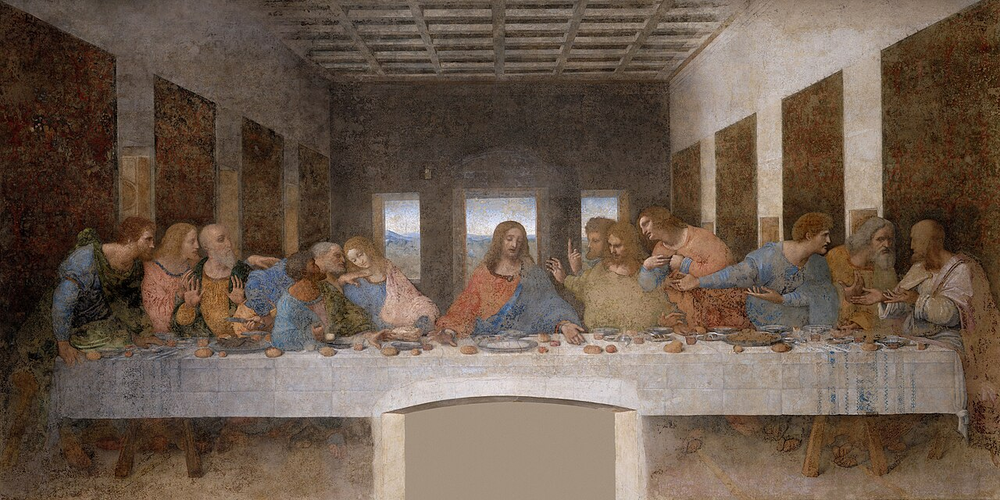
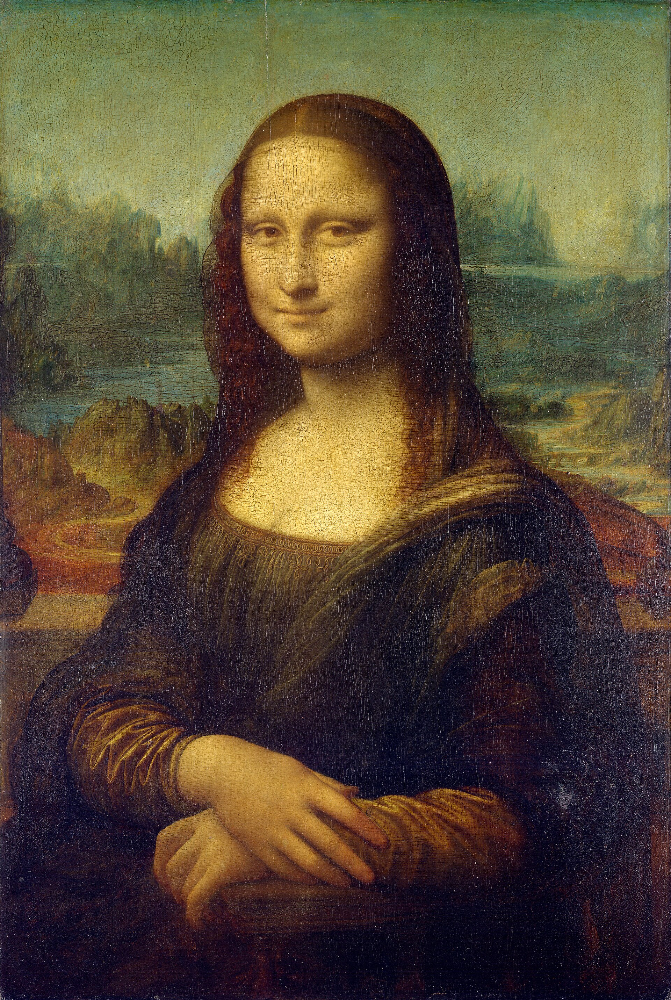
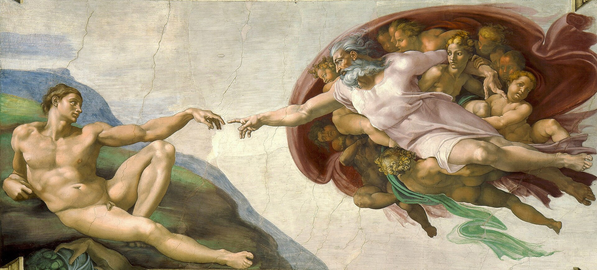

르네상스
그림 속에 진짜 같은 공간을 만들다

아테네 학당Scuola di Atene라파엘로 산치오 · 1509–1511 아치와 바닥의 모든 선이 플라톤과 아리스토텔레스 사이의 한 점으로 모인다. 원근법으로 지은 지혜의 전당.

비너스의 탄생La nascita di Venere산드로 보티첼리 · 1484–1486 잊혔던 고대 신화가 다시 화면 위에 피어났다. 신 대신 인간의 아름다움을 노래한 르네상스의 시작.

최후의 만찬Il Cenacolo레오나르도 다 빈치 · 1495–1498 천장과 벽의 선이 모두 예수의 머리로 모여, 우리의 시선이 이야기의 한가운데에 닿는다.

모나리자La Gioconda레오나르도 다 빈치 · 1503–1519 윤곽을 안개처럼 흐리게 녹이는 스푸마토 기법으로, 숨 쉬는 듯한 얼굴과 미소를 그렸다.

아담의 창조Creazione di Adamo미켈란젤로 부오나로티 · 1508–1512 시스티나 성당의 천장화. 닿을 듯 닿지 않는 두 손가락 사이로 생명이 건너간다.